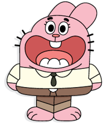

GUMBALL
Gumball Watterson é um gato azul de 12 anos, protagonista de *O Incrível Mundo de Gumball*.
DARWIN
Darwin é um peixe com pernas, irmão adotivo de Gumball, sempre otimista e leal.

RICHARD
Richard é o pai de Gumball, um coelho rosa descontraído e engraçado.
NICOLE
Nicole é a mãe de Gumball, uma gata azul dedicada e bastante determinada.